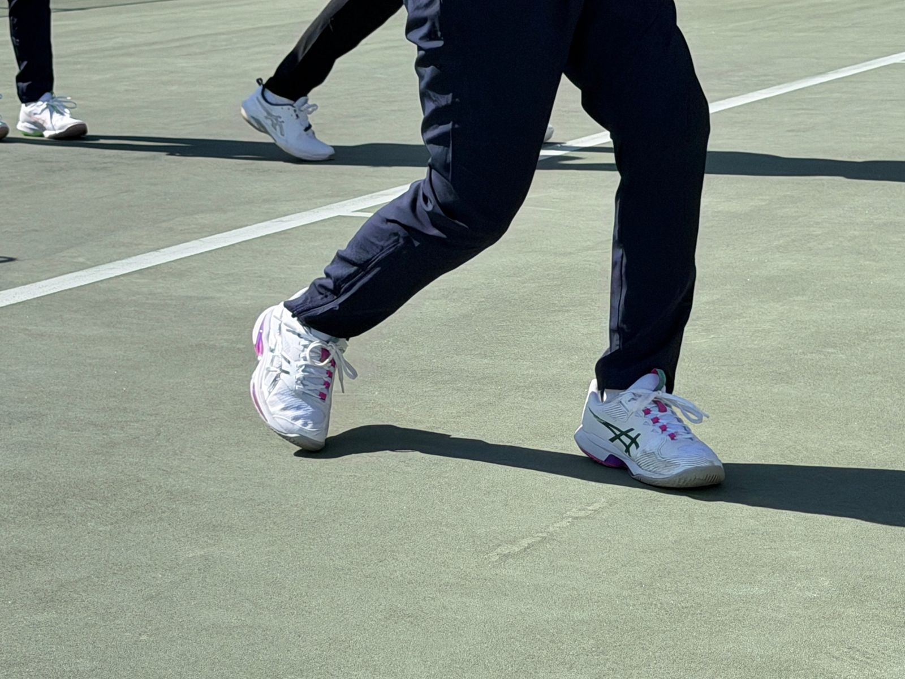
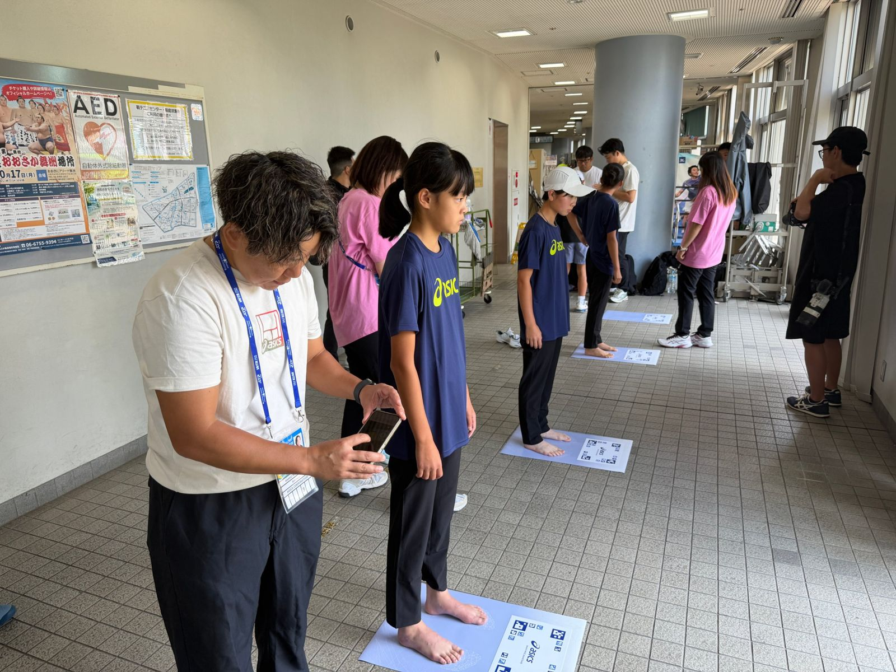
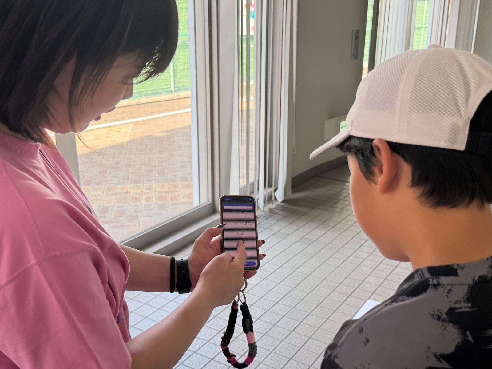
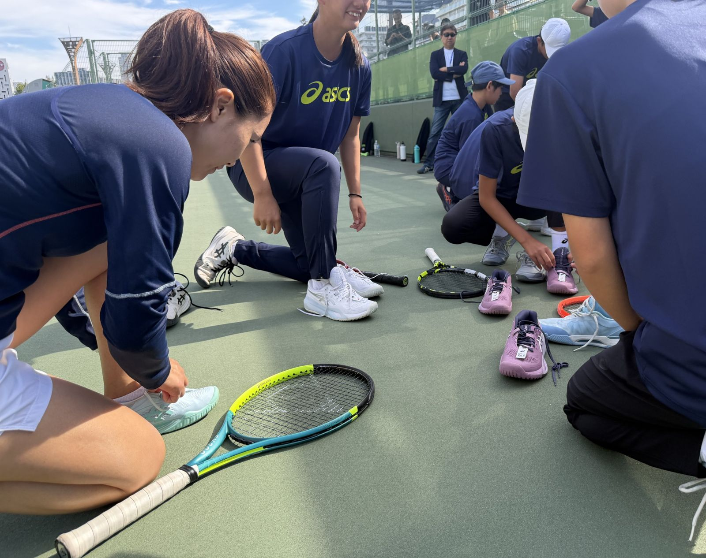
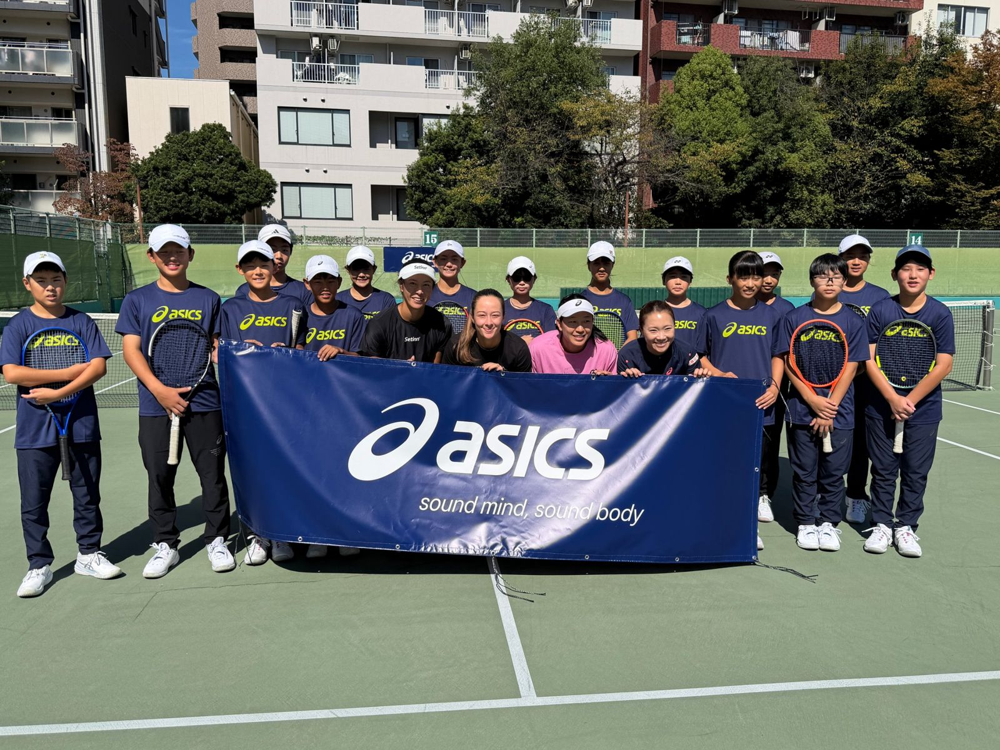

2026年10月17日、大阪市のモリタテニスセンター靭で「アシックス ジュニアテニスアカデミー」が開催されました。抽選で選ばれたU-12世代のジュニア20名が、女子テニス日本代表・奈良くるみコーチから直接指導を受けました。
テーマは、試合で差を生むフットワーク。そして、その動きを支えるシューズ選び。ジュニアたちは足形測定で自分の足を知り、アシックスの【STABILITY】【SPEED】2タイプのシューズを履き替えながら、レッスンとラリーに取り組みました。
[取材後に追記：当日の印象的なエピソード]
最初に伝えたキーワードは「Split Step → 1歩目 → 止まる → 打つ」。この流れを、ステップワークからラリーまで段階的に体に染み込ませました。
ドリルで覚えた動きを、ツアーで戦う選手とのラリーで試しました。テーマは段階的に5つ。
「速く走るためのステップではなく、次のボールを打つためのステップ」
レッスンの前に、まずは自分の足を知るところから。測定結果に合ったシューズを履くことで、アシックスシューズの機能性をコートで体感しました。

受付後、アシックスのスタッフが一人ひとりの足形を測定。自分の足の特徴を知ることから始めました。

足形とプレースタイルに合わせて、一人ひとりに合うシューズを提案しました。

試し履きしたままコートへ。レッスン中にシューズを履き替え、動きの違いを自分の足で確かめました。
「[シューズ選びについて、奈良コーチのコメント]」
「[参加者コメント]」
[学年・所属スクール]「[参加者コメント]」
[学年・所属スクール]「[シューズ選びで大切にしたいこと]」
[学年・所属スクール]3歳でテニスを始め、国内の主要ジュニアタイトルを獲得。17歳でプロに転向し、グランドスラム全4大会で勝利を挙げる。2014年リオ・オープンでWTAツアー初優勝。2022年9月の東レ パン パシフィック オープンを最後に現役を引退し、現在は日本代表チームや国内選手のサポートにあたる。
この日ジュニアたちに伝えたフットワークを、奈良コーチ自身もアシックスのシューズとともに磨いてきました。[契約内容・期間など、アシックス確認後に追記]

ジュニアが体感したアシックスのテニスシューズを、ぜひ履き比べてみてください。